Kochi, Kochi: things to do, food and stays
Kochi · Kochi
Kochi
Highlighted on the Kochi map.
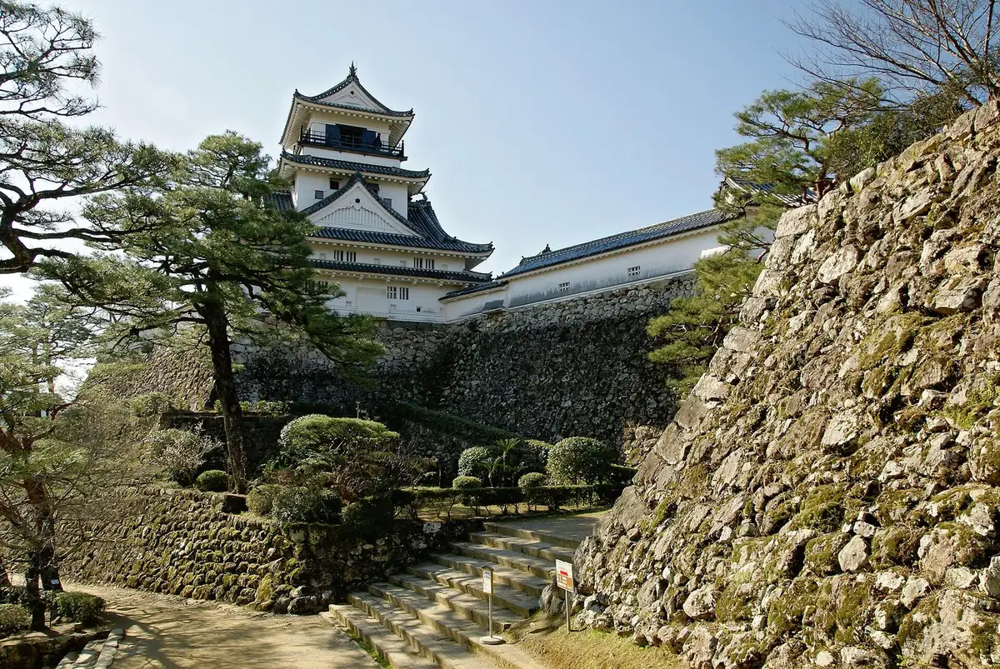
Stay
hotel nansui
hotel nansui
城西館
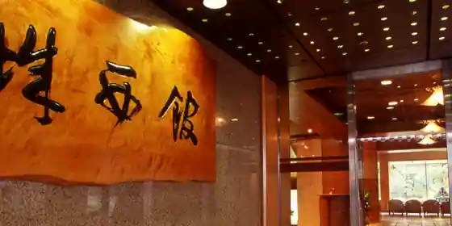
Josai Kan
リッチモンドホテル高知
Ritchimondo Hotel Kochi
高知城下の天然温泉 三翠園
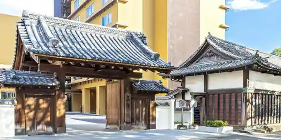
Kochi Joka No Tennen Onsen San Sui Sono
Inn at Chijokanotennen Onsen in Takajo, Kochi.
JRクレメントイン高知
JR Kurementoin Kochi
Inn in Kitamoto, Kochi; 2-minute walk from Jrkochi Station.
天然温泉 紺碧の湯 ドーミーイン高知
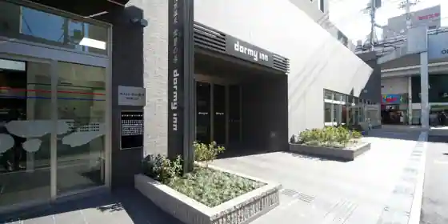
Tennen Onsen Konpeki No Yu Dormy Inn Kochi
Inn in Obiya, Kochi with breakfast available.
ANAクラウンプラザホテル高知 by IHG
ANA Kuraun Plaza Hotel Kochi by IHG
コンフォートホテル高知
Comfort Hotel Kochi
Hotel in Kitamoto, Kochi with parking; 5-minute walk from Jrkochi Station.
ブライトパークホテル
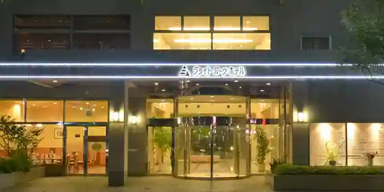
Buraito Park Hotel
セブンデイズホテルプラス
Sebundeizu Hotel Purasu
Hotel in Harimaya, Kochi with business travelers.
西鉄イン高知はりまや橋
Nishitetsu Inn Kochi Harimaya Hashi
ホテルベストプライス高知
Hotel Besutopuraisu Kochi
Dining
ラ・プリマ・ヴォルタ
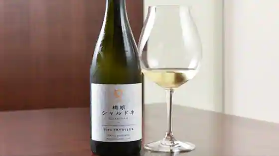
Ra Purima Voruta
将人
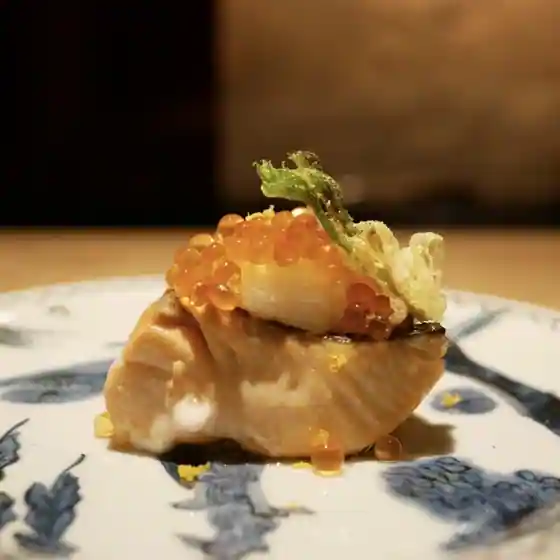
Masato
IHARA
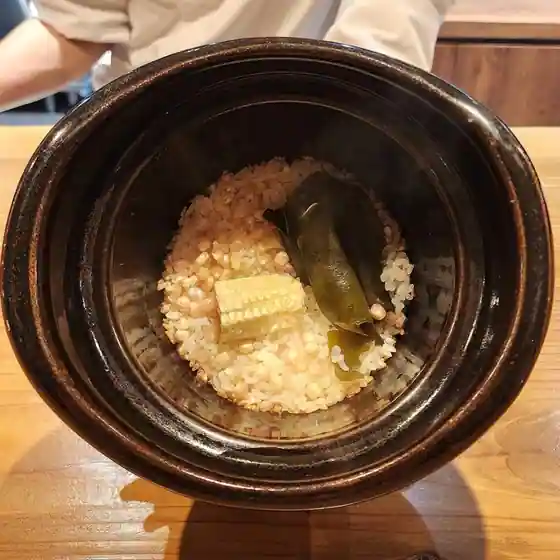
IHARA
アンナータ
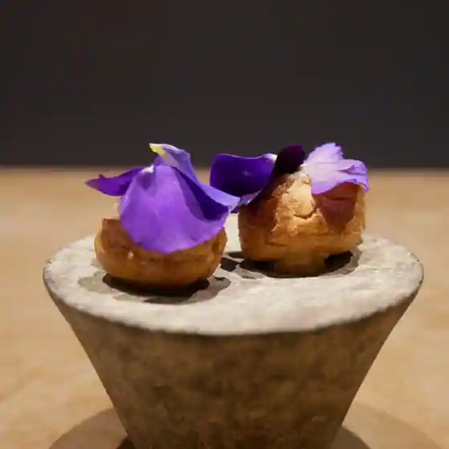
Annata
どんこ
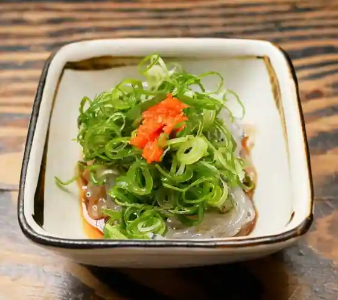
Donko
コックドール
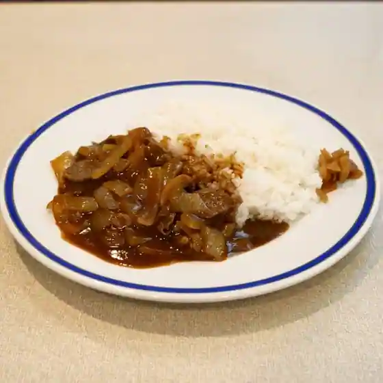
Kokkudoru
うますし
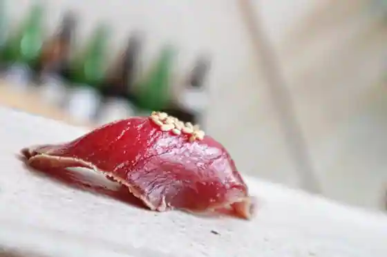
Umasushi
かね春
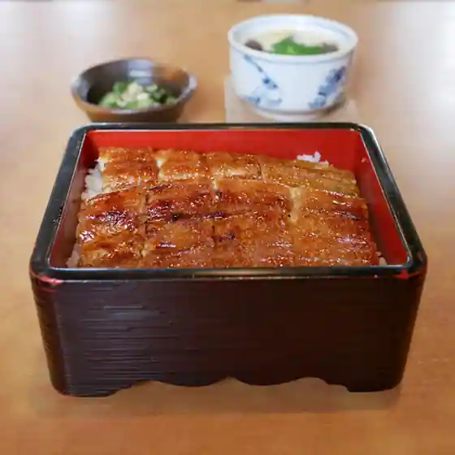
Kane Haru
ゆう喜屋
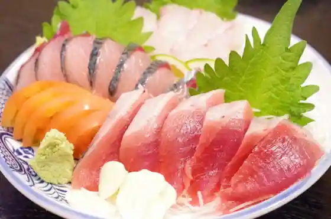
Yu Ki Ya
黒尊
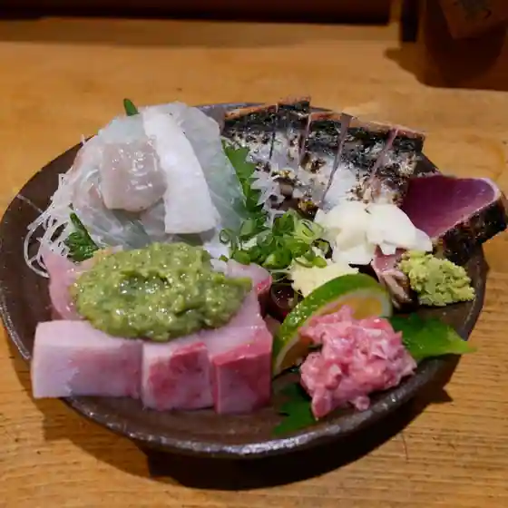
Kokuson
座屋
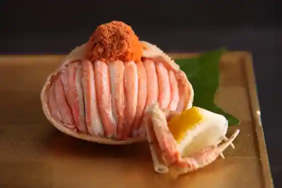
Za Ya
屋台安兵衛
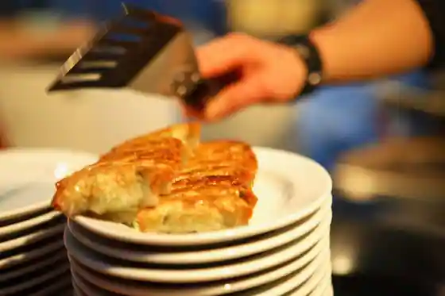
Yatai Yasube
いまどき安兵衛

Imadoki Yasube
やいろ亭
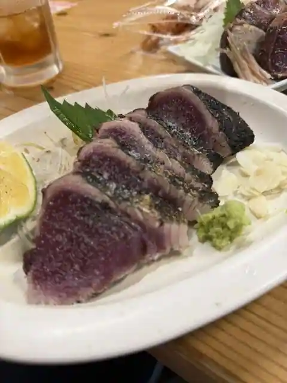
Yairo Tei
かもん亭
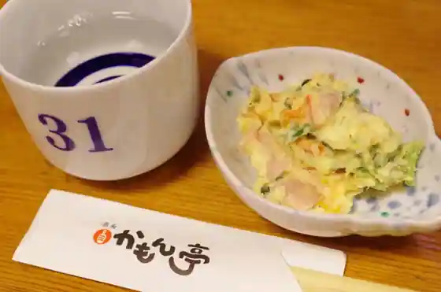
Kamon Tei
すごろく
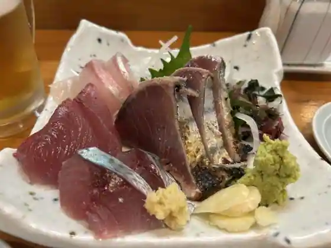
Sugoroku
ハングリーベア
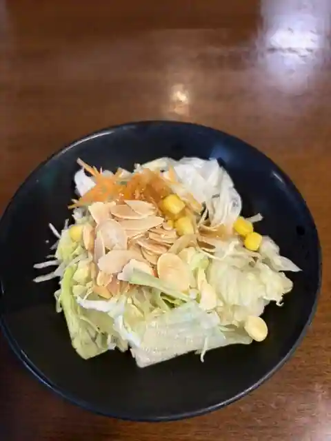
Hanguribea
二十一亭
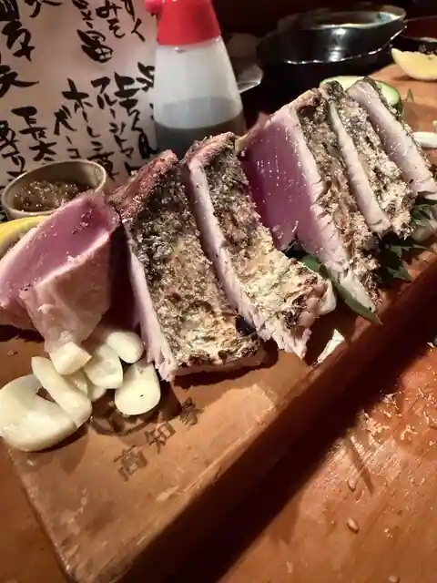
Niju Ichi Tei
フランソワ
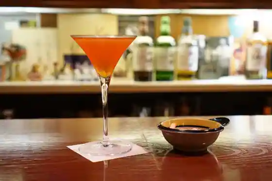
Furansowa
料理ふじ味
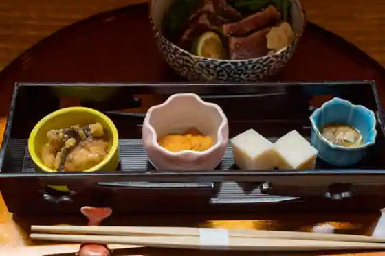
Ryori Fuji Aji
一釣
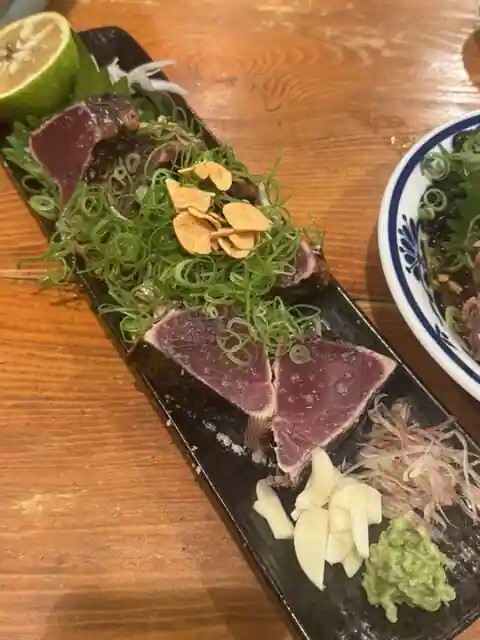
Ichi Tsuri
四十五圓
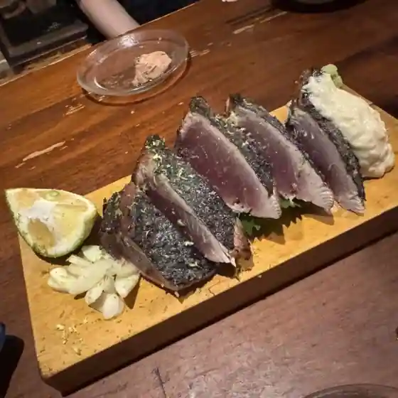
Shiju Go En
凛々 鈴のや
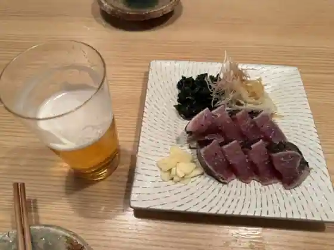
Rinrin Suzu Noya
魚の店 つづき
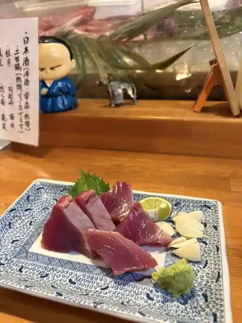
Sakana No Tsuzuki
Sights
Kochi Shiro
Kochi Castle keep, Kochi City
Katsurahama
Katsurahama beach, Kochi
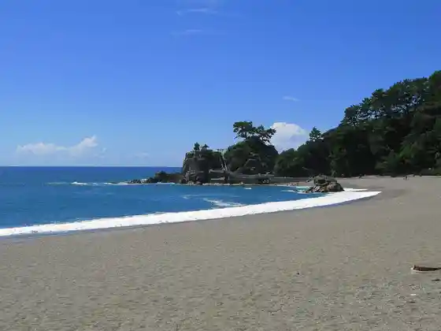
Sakamoto Ryoma Zo
Statue of Sakamoto Ryoma at Katsurahama
Nichiyo City
Kochi Sunday Market
Wanpakukochi Animaru Land
Wanpark Kochi Animal Land main gate
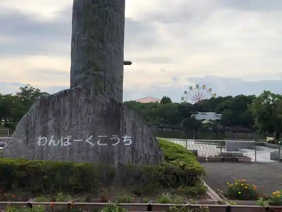
Go Dai Yama
Mount Godai, Kochi
Kochi Prefectural Makino Botanical Garden
Kochi Prefectural Makino Botanical Garden
Chikurin Tera
Chikurin-ji Temple on Mount Godai